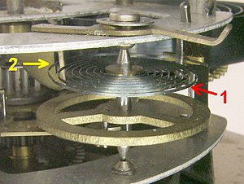

Balans – regulator chodu w zegarach i zegarkach mechanicznych, odpowiednik wahadła w zegarze wahadłowym.
Jest to element zegarka wykonujący ruch obrotowy zwrotny, wokół osi przechodzącej przez jego środek ciężkości. Ruch ten podtrzymywany jest poprzez impulsy napędowe, a oscylacje wykonuje pod wpływem działania momentu zwrotnego sprężynki spiralnej (włosa).
Balans współpracuje z wychwytem, odmierzającym obroty kół zębatych mechanizmu zegarowego, jednocześnie pobierając z tego mechanizmu energię podtrzymującą ruch. Balans jest wahadłem torsyjnym, a zatem takim wahadłem, w którym ruchomy element obraca się wahadłowo pod wpływem sprężyny. W odróżnieniu od stosowanego w innych zegarach wahadła fizycznego, ruch balansu nie jest związany z obecnością pola grawitacyjnego Ziemi. Może on zatem pracować niezależnie od ustawienia względem pionu, a jego okres ruchu jest niezależny od miejsca na Ziemi.

Koło balansu w mechanizmie taniego budzika.
1-włos, 2-przesuwka umożliwiająca regulację okresu drgań
Koło balansu w mechanizmie taniego budzika.
1-włos, 2-przesuwka umożliwiająca regulację okresu drgań